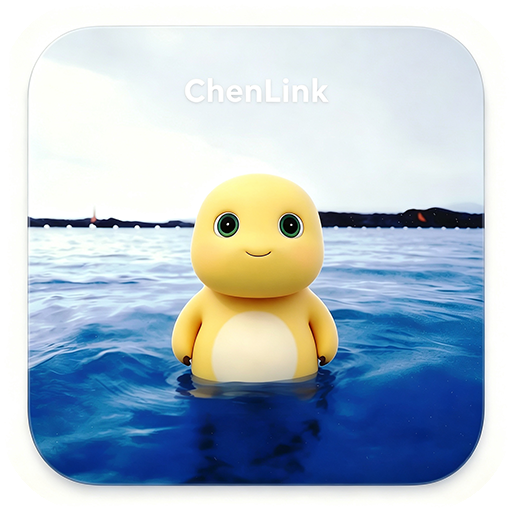

让只能局域网联机的游戏，跨网络也能一起玩
ChenLink 是一款 Windows 桌面小工具：房主把“游戏服务器端口”通过房间码共享给好友，
好友在本地得到一个映射端口，在游戏里“直接连接 127.0.0.1:映射端口”即可联机。
它不是一个网页游戏 —— 本项目是 WinUI 3 桌面应用，此页面只是展示与介绍， 实际游玩需要下载/构建 Windows 程序（见下方步骤）。
仅限局域网的 TCP/UDP 游戏，也能和异地好友一起玩（UDP 与 TCP 同端口转发，基岩版等 UDP 游戏同样可连）。
同网直连 / TCP 打洞，能直连就不绕路。
打洞失败自动走服务器中继，保证可用。
内置 EasyTier 模式，借助公共节点自动组网。
Minecraft、泰拉瑞亚、星露谷、英灵神殿一键填端口。
自包含构建，目标机器免装运行时。
下载或构建 ChenLink.exe（需要 Windows 10/11）。
房主：选游戏 / 填端口 → 创建房间（无公网模式则点“创建无公网房间”）。
把 5 位房间码（或整行邀请码）发给好友。
玩家：输入房间码 / 粘贴邀请码 → 加入房间。
状态变 “已就绪” 后，在游戏里选择“多人游戏 / 直接连接”，
填入 127.0.0.1:本机连接端口（无公网模式填提示的 虚拟IP:端口）。
需要 .NET 8 SDK。Windows App SDK 的 NuGet 首次还原需联网。
# 端到端自测（无需游戏）
dotnet run --project src/ChenLinkServer -- --selftest
# 构建客户端
dotnet build src/ChenLink/ChenLink.csproj -c Release -p:Platform=x64
# 打包单文件自包含版
dotnet publish src/ChenLink/ChenLink.csproj -c Release -p:Platform=x64 -r win-x64 `
--self-contained true -p:PublishSingleFile=true `
-p:IncludeNativeLibrariesForSelfExtract=true -o dist